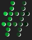

<mat-toolbar color="primary" class="nr-header">
  <button
    mat-icon-button
    aria-label="Toggle menu"
    (click)="menuOpen = !menuOpen"
  >
    <mat-icon>menu</mat-icon>
  </button>
  
  <span><span class="nr-green-text">no</span>REST playground</span>
  <a
    href="https://github.com/janhommes/noREST"
    class="nr-github"
    title="Open on Github"
  >
    
  </a>
</mat-toolbar>

<mat-sidenav-container style="height: calc(100vh - 64px)">
  <mat-sidenav
    #sidenav
    mode="side"
    [opened]="menuOpen"
    style="min-width: 300px;"
  >
    <mat-expansion-panel>
      <mat-expansion-panel-header>
        <mat-panel-title>
          Examples
        </mat-panel-title>
      </mat-expansion-panel-header>
      <nr-examples></nr-examples>
    </mat-expansion-panel>
    <mat-expansion-panel expanded="true">
      <mat-expansion-panel-header>
        <mat-panel-title>
          Index fragments
        </mat-panel-title>
      </mat-expansion-panel-header>
      <nr-fragment-list></nr-fragment-list>
    </mat-expansion-panel>
    <mat-expansion-panel>
      <mat-expansion-panel-header>
        <mat-panel-title>
          Realtime
        </mat-panel-title>
      </mat-expansion-panel-header>
      <nr-realtime></nr-realtime>
    </mat-expansion-panel>
  </mat-sidenav>

  <mat-sidenav-content>
    <nr-http-form></nr-http-form>
  </mat-sidenav-content>
</mat-sidenav-container>
